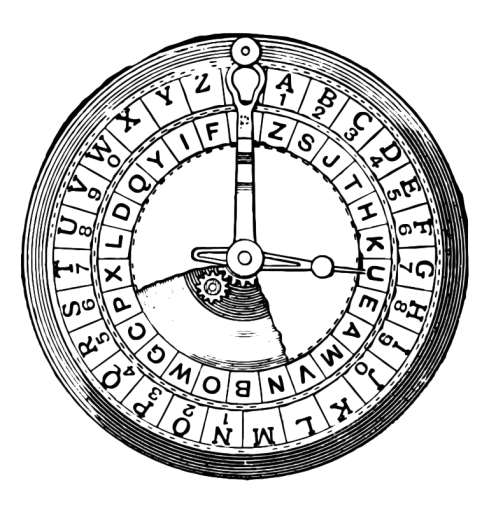

Предположительно, Цезарь (да, тот самый Цезарь) «шифровал» (т. е. скрывал обратимым образом) конфиденциальные сообщения, сдвигая каждую букву в них на некоторое количество позиций. Например, он мог написать A как B, B как C, C как D, …, и, оборачиваясь по алфавиту, Z как A. И поэтому, чтобы сказать кому-то ПРИВЕТ, Цезарь мог написать IFMMP вместо этого. Получив такие сообщения от Цезаря, получатели должны были «расшифровать» их, сдвигая буквы в противоположном направлении на то же количество позиций.
Шифровка
Секретность этой «криптосистемы» основывалась на том, что только Цезарь и получатели знали секрет, количество позиций, на которые Цезарь сдвинул свои буквы (например, 1). Не особенно безопасно по современным стандартам, но, эй, если вы, возможно, первый в мире, кто это сделал, довольно безопасно!
Незашифрованный текст обычно называется открытым текстом. Зашифрованный текст обычно называется шифротекстом. А используемый секрет называется ключом.
Чтобы было понятнее, вот как происходит шифрование HELLO с помощью ключа 1
итог IFMMP:

Круг Цезаря
Более формально, алгоритм Цезаря (т.е. шифр) шифрует сообщения, «вращая» каждую букву на K
позиции. Более формально, если P
представляет собой некоторый открытый текст (т.е. незашифрованное сообщение),Pi
это i
персонаж в P
, и K
является секретным ключом (т.е. неотрицательным целым числом), то каждая буква, Ci
, в зашифрованном тексте, C
, вычисляется как
Ci = (Pi + K) % 26
где % 26
здесь означает «остаток от деления на 26». Эта формула, возможно, заставляет шифр казаться более сложным, чем он есть на самом деле, но на самом деле это просто краткий способ точного выражения алгоритма. Действительно, ради обсуждения, представьте A (или a) как 0
, B (или b) как 1
, …, H (или h) как 7
, i (или I) как 8
, …, и Z (или z) как 25
Предположим, что Цезарь просто хочет сказать Hi кому-то конфиденциально, используя, на этот раз, ключ, K
, из 3. И поэтому его открытый текст, P
, это Hi, в этом случае первый символ его открытого текста, P0
, есть H(он же 7), а второй символ его открытого текста, P1
, есть i(он же 8). Первый символ его шифртекста, C0
, таким образом K, и второй символ его шифртекста, C1
, таким образом L. Понимаете смысл?

Решение
int main(int argc, string argv[])
{
if (argc != 2)
{
printf("Usage: ./ceasar k");
return 1;
}
for (int key = 0; key < strlen(argv[1]); key++)
{
if (isalpha(argv[1][key]))
{
printf("Usage: ./caesar key\n");
return 1;
}
}
int key = atoi(argv[1]) % 26;
string plaintext = get_string("plaintext: ");
printf("ciphertext: ");
for (int i = 0, length = strlen(plaintext); i < length; i++)
{
if (!isalpha(plaintext[i]))
{
printf("%c", plaintext[i]);
continue;
}
int offset = isupper(plaintext[i]) ? 65 : 97;
int pi = plaintext[i] - offset;
int ci = (pi + key) % 26;
printf("%c", ci + offset);
}
printf("\n");
return 0;
}